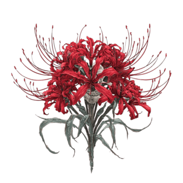
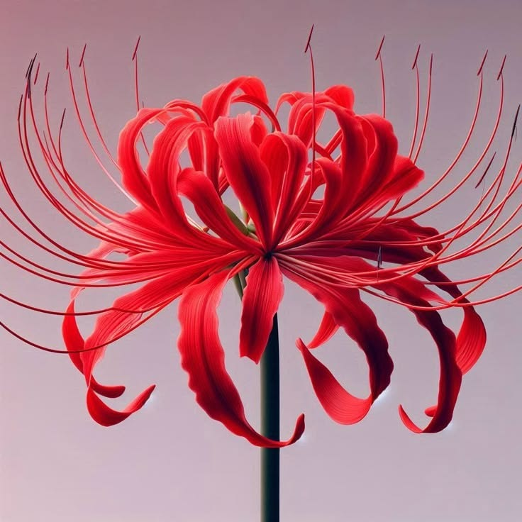
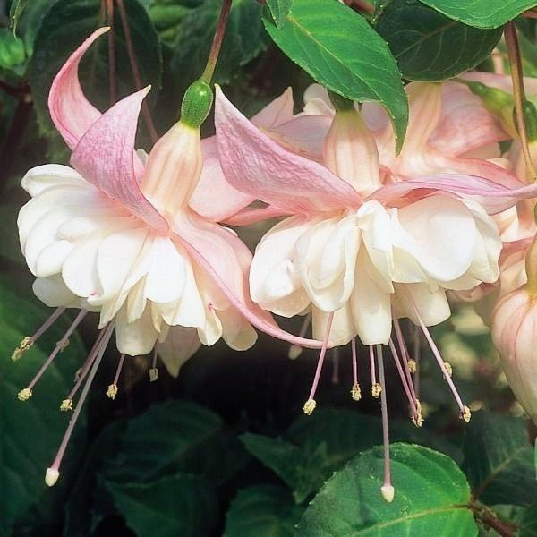
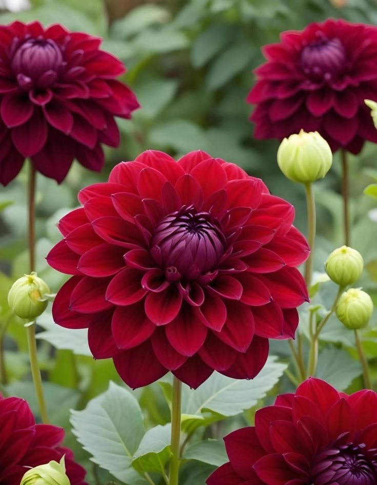
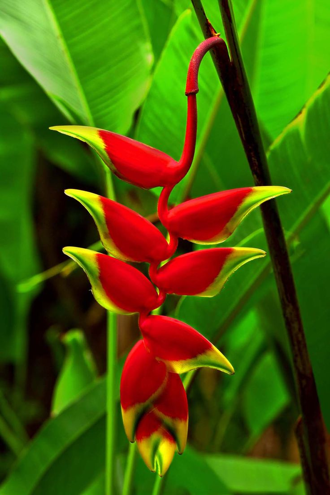
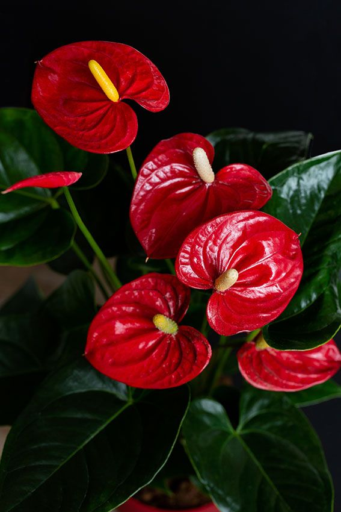
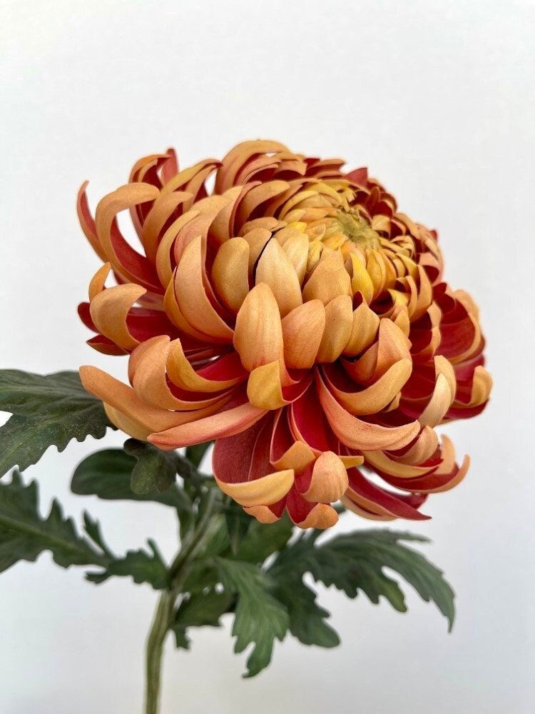
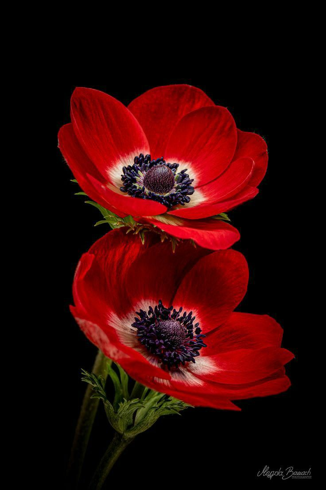
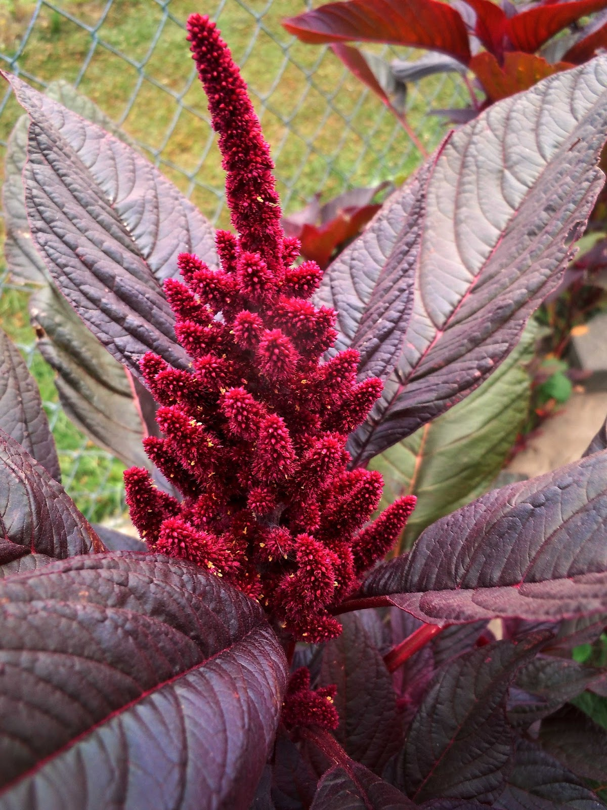

Conheça a espécie
Pesquise as necessidades específicas da sua flor, pois cada planta tem preferências diferentes de sol e água.
ao nosso catálogo! Escolha sua flor favorita e descubra como cuidar dela.

Ache oque você procura

Pétalas finas e longos estames vermelhos que lembram as pernas de uma aranha.

Flores pendentes, com formato de sino e cores vibrantes e contrastantes.

Flores exuberantes de diversas cores e tamanhos, com pétalas geometricamente perfeitas.

Brácteas firmes e coloridas pendentes em formato de bico de pássaro.

Folha modificada em formato de coração e brilhante, abrigando a verdadeira flor central.

Flores densas e abundantes, muito tradicionais em vasos e arranjos florais.

Flores delicadas com centro escuro bem marcado e pétalas finas.

Apresenta a pétala inferior modificada em um formato exótico de bolsa.

Inflorescências pendentes em tons de vermelho ou roxo com textura aveludada.
| Nome Científico: | |
| Origem: | |
| Altura: | |
| Época: | |
| Ciclo: | |
| Luminosidade: | |
| Toxicidade: | |
| Dificuldade: |
As flores representam uma das mais notáveis expressões de complexidade e requinte no reino vegetal. Muito além de seu inegável valor estético, elas desempenham um papel biológico fundamental na perpetuação da vida e na manutenção do equilíbrio dos ecossistemas. Historicamente, esses elementos botânicos transcendem a natureza, consolidando-se como símbolos de elegância e vitalidade presentes na cultura, na arquitetura e no paisagismo. A verdadeira riqueza das plantas floríferas reside em sua extraordinária diversidade. Cada espécie, moldada por milênios de evolução, desenvolveu características singulares para se adaptar aos mais variados climas e regiões do globo.
Pesquise as necessidades específicas da sua flor, pois cada planta tem preferências diferentes de sol e água.
Coloque a flor no local ideal: sol pleno para as que gostam de calor, ou luz indireta (sombra) para as mais sensíveis.
Coloque o dedo na terra: se estiver seca, regue a base da planta; se estiver úmida, espere mais um pouco.
Garanta que o vaso tenha furos no fundo para a água escorrer e use uma terra leve que não acumule água.
Use um adubo para flores durante a primavera e o verão para dar os nutrientes necessários para a floração.
Corte folhas secas e flores murchas para que a planta não gaste energia e possa gerar novos brotos.